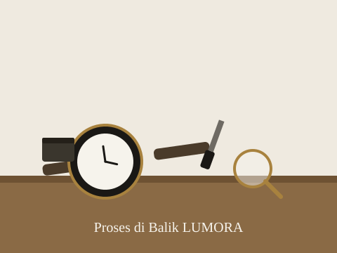

Kesederhanaan
Desain yang bersih dan tidak berlebihan, supaya nyaman dipakai kapan saja.
Tentang kami
Lebih dari sekadar jam tangan — LUMORA adalah cara kami memaknai waktu.
LUMORA Watch dimulai dari hal sederhana: rasa gemas melihat jam tangan yang terlalu ramai desainnya, padahal yang kami cari hanya jam yang enak dipakai setiap hari dan tetap terlihat rapi di berbagai suasana.
Dari situ, LUMORA dibuat dengan satu prinsip — kurangi yang tidak perlu, pertahankan yang penting. Kami memilih material yang tahan lama, bentuk yang sederhana, dan detail yang dikerjakan dengan teliti, supaya setiap jam tangan LUMORA bisa menemani penggunanya bertahun-tahun, bukan berganti tiap musim.
Setiap jam tangan LUMORA melewati proses perakitan manual di meja kerja kami — mulai dari pemasangan mesin, penyetelan jarum, hingga pemeriksaan akhir dengan kaca pembesar. Kami tidak terburu-buru, karena ketelitian di tahap ini yang menentukan seberapa awet jam tangan tersebut dipakai bertahun-tahun ke depan.

Menjadi brand jam tangan lokal yang dipercaya karena desainnya yang sederhana, kualitasnya yang konsisten, dan kejujurannya dalam menyampaikan produk.
Empat hal yang selalu kami pegang dalam setiap produk LUMORA.
Desain yang bersih dan tidak berlebihan, supaya nyaman dipakai kapan saja.
Material dan mesin dipilih dengan standar yang jelas, bukan asal jadi.
Setiap detail, sekecil apa pun, diperiksa sebelum sampai ke tangan pelanggan.
Kami ingin dikenal karena jujur soal produk, bukan karena janji berlebihan.